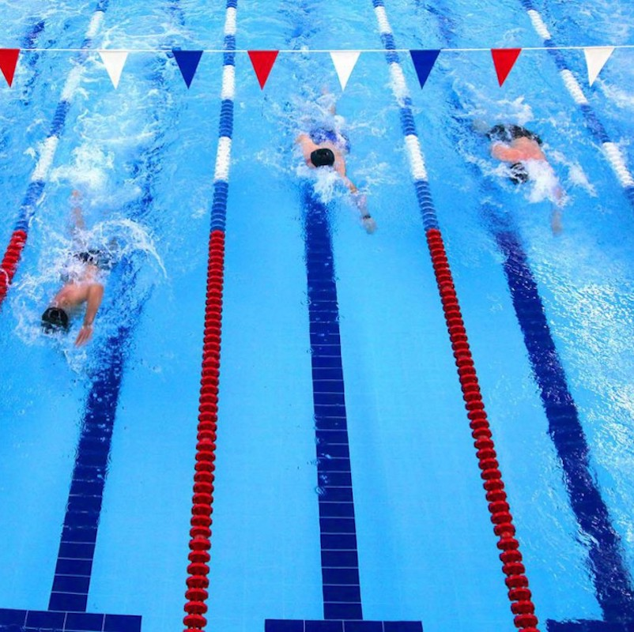
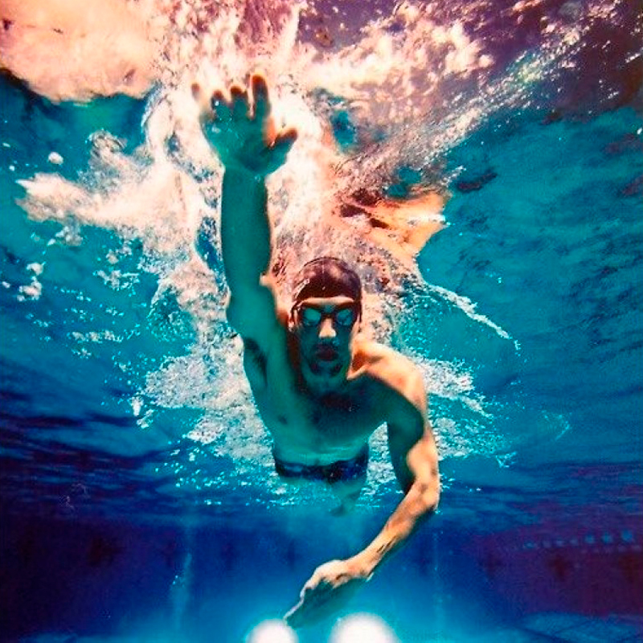

Информация о Плавание

Плавание — это спортивная дисциплина, в которой участники перемещаются по воде, используя свои тела и специальные движения. Плавание широко практикуется как спорт, рекреация и даже как навык самосохранения. Этот вид спорта может быть как индивидуальным, так и командным, и он охватывает разнообразные дистанции, стили плавания и соревновательные форматы.
Вот основные аспекты плавания:
Стили плавания:
В плавании существует несколько стилей, каждый из которых характеризуется своими уникальными движениями. Наиболее распространенные стили включают кроль (вольный стиль), на груди, на спине и баттерфляй (дельфин).
Бассейны и открытые воды:
Плавание может проводиться как в бассейнах, так и в открытых водных пространствах, таких как озера, реки и моря. Каждое из этих окружений имеет свои особенности и требования.
Техника:
Плавание требует правильной техники дыхания, движений рук, ног и тела. Координация и эффективность движений играют важную роль в достижении высоких результатов.
Соревнования:
Соревнования по плаванию проводятся на различных дистанциях, от коротких спринтов до длинных дистанций. Также существуют комбинированные дисциплины и эстафеты, в которых участвуют несколько пловцов.
Соревнования на открытых водах:
Это включает в себя марафонское плавание в открытых водах, плавание в океанах и озерах на длинные дистанции, а также соревнования в триатлоне, который включает плавание, велосипед и бег.
Здоровье и физическая форма:
Плавание является отличным видом физической активности, которая способствует развитию выносливости, силы, гибкости и кардиоваскулярной выносливости. Это также мягкий по отношению к суставам вид тренировки.
Безопасность:
Плавание может также служить важным навыком самосохранения. Умение плавать может спасти жизни в случае попадания в водные аварии.
Тренировки:
Разнообразные тренировки включают в себя плавание на длинные дистанции, интенсивные интервальные тренировки, технические практики и упражнения с использованием различных плавательных снарядов.
Плавание — это спортивная активность, которая приносит множество пользы для здоровья и физической формы. Оно также может быть очень увлекательным и приносить удовольствие, будь то в качестве спортивной дисциплины, рекреации или отдыха.
советы

Стать плавцом — это увлекательный и здоровый путь, который требует упорной работы, тренировок и преданности. Вот некоторые шаги, которые помогут вам начать свой путь к становлению плавцом:
Изучите основы:
Ознакомьтесь с основами плавания, включая правила плавания в бассейне, технику дыхания и движений. Понимание базовых принципов поможет вам начать с правильного фундамента.
Обучение у инструктора:
Найдите опытного инструктора плавания, который сможет обучить вам правильной технике. Профессиональное руководство важно для развития эффективных навыков и предотвращения неправильных привычек.
Тренировки:
Регулярно участвуйте в тренировках, чтобы развивать физическую выносливость, силу и технические навыки. Занятия в бассейне помогут вам ощутить улучшение и прогресс.
Техника плавания:
Освойте базовые стили плавания, такие как вольный стиль (кроль), баттерфляй (дельфин), на спине и на груди. Каждый стиль имеет свои особенности и движения.
Технические упражнения:
Включите в свою тренировочную программу упражнения для развития техники, такие как плавание с плавниками, плотностными рукавами и другими плавательными снарядами.
Выносливость:
Плавание требует хорошей выносливости. Включите в тренировки интервальные тренировки и длинные дистанции, чтобы развивать кардиоваскулярную выносливость.
Тренировочный план:
Создайте тренировочный план, который включает в себя разнообразные виды тренировок: технические, выносливостные, интенсивные и др. Постепенно увеличивайте сложность и интенсивность тренировок.
Плавательные соревнования:
Принимайте участие в местных плавательных соревнованиях. Это поможет вам оценить свой уровень, а также получить опыт соревнований.
Правильное питание:
Поддерживайте здоровое и сбалансированное питание, чтобы обеспечивать свой организм необходимыми питательными веществами и энергией для тренировок.
Регулярность:
Плавание требует постоянных тренировок и практики. Регулярность является ключевым фактором в развитии навыков и повышении уровня плавания.
Учите и анализируйте:
Просматривайте видеоуроки, учебные материалы и анализируйте свои плавательные движения. Это поможет вам понять, как можно улучшить свою технику.
Постоянство и упорство:
Путь к успеху в плавании требует времени и усилий. Будьте готовы сталкиваться с трудностями, но не теряйте мотивацию и продолжайте работать над собой.
Плавание — это замечательный спорт, который помогает развивать физическую форму, выносливость и технические навыки. Наслаждайтесь процессом обучения и улучшения своих результатов.